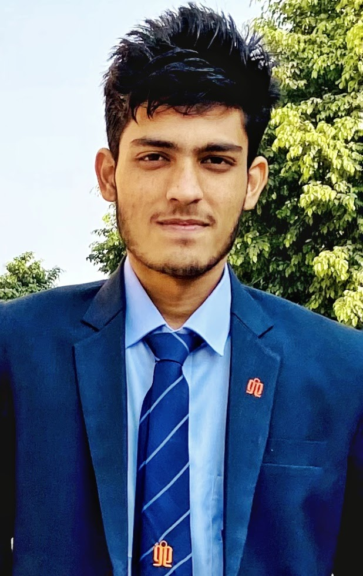
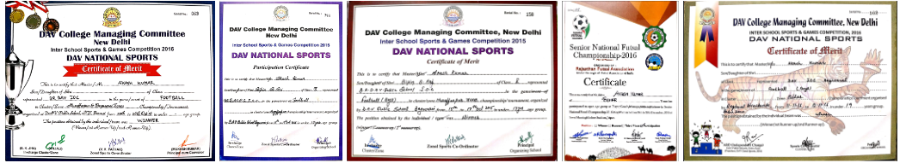
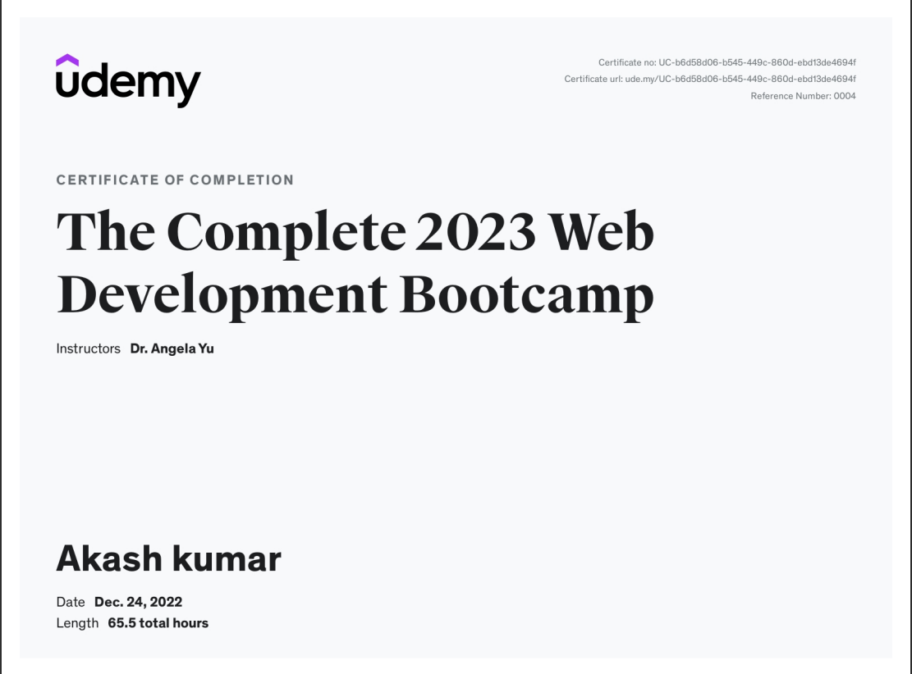

Akash Kumar

Profile
I am at a level of intermediate in C/C++ programming and i am also having keen interested in
web development and learning HTML/CSS/JS. Currently i am learning these skills to add to
my asset with the building block of computer science. Being in sports for long made me
believes not to stop until my heart and mind don't. From sports i meant football which is my
passion and it helped me to grow a lot. I learn leadership skills/critical-thinking skills and
learned to act in and according to my team and most importantly football taught me to
work calmly under deep pressure.
Education
- Bachlors(computer
science & engineering)
- Geeta engineering college
( Kurukshetra university)
- 2020-2024 ( pursuing)
- Senior Secondary
- U.T College, Begusarai
- Percentage obtained : 60 %(in PCM)
- Secondary
- BR DAV Public school,
begusarai
- Percentage obtained : 77.9 %
Skills
- Development
- HTML
- CSS (intermediate)
- JS (intermediate)
- Programming.
- C/C++ : Level intermediate
- DBMS
- Personal Skills
- Sketching/painting
- Rubik's cube solver
- Chess player
- Football player(best at)
- Basketball/badminton
Awards And Certificates
Football Certificates

Web Developmet Certificate

For Other Details
Contact Details